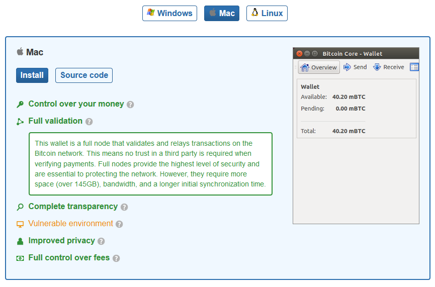
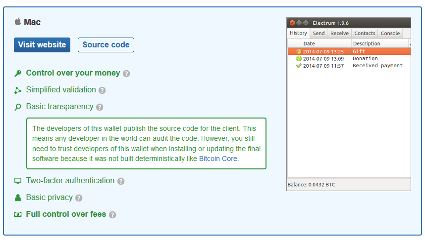

First, you need a wallet. This is usually software for your computer or portable device that contains your public key. That is the full form of the address where people can send Bitcoins to you along with your private key which gives you access to those Bitcoins.
you can't easily get wallets for iOS device because Apple has blocked their distribution through the Apple app store.
you can't easily get wallets for iOS device because Apple has blocked their distribution through the Apple app store.
There are basically 3 types of wallets
A wallet is very much like a bank account, except that you can create as many as you want. And in fact, some people create different wallets for different purposes: such as personal and business or even one wallet for each transaction that they do.
On an Android phone, just visit the Play store and search for Bitcoin wallet.
Any of these wallets will work, and you can always change which one you use. Simply install the new wallet and send your Bitcoins to yourself at the new address.
These use an external service that usually has control of your money. Besides those online wallets listed on bitcoin.org, most places where you can exchange Bitcoins for dollars and euros, also let you store your money on their servers. Coinbase.com and blockchain.info are two examples. The good thing about online wallets is that they don't require any maintenance, and they're accessible even if you're using someone else's computer or phone. The bad thing is that you're trusting someone else with your money, and that's been a big problem in the past.
One warning though, be sure to check the URL of the site where you're downloading the wallet. Your best bet is to only download wallets by way of links that come from bitcoin.org and specifically from this page at /chooseyourwallet.
Also consider storing only a small amount of money in the new wallet for awhile because it's possible that a scammer could release new wallet software that quietly steals your coin. And remember that anyone who has access to your device also has access to your wallet and can spend your coins. So, treat your Bitcoin wallet like a real world wallet because it contains real world money.
https://bitcoin.org/en/wallets/desktop/mac/bitcoincore/
Here we see that Bitcoin Core on the Mac has something called full validation. That means that it downloads the full blockchain, which includes a record of every Bitcoin transaction that has ever occurred. Now that's great for security, but also means downloading over 140 gigabytes of data the first time you use the wallet. That's like downloading dozens of full length movies. It'll take a really long time and it could cause problems with your internet service provider.
If you check another wallet called 'Electrum', you'll see it does not download the full blockchain.
if you lose the device or your password, and you haven't made a backup, that's it, you simply lose access to all your money.
Several ways:
This is completely safe on both sides because the sender has to confirm the payment before it gets sent, and the recipient is only displaying the public key.
Provide either the text of your address, or a QR code to the person who is going to pay you.
In your wallet, click 'request'. You should be able to view something callsed 'Your address'. It's a long link of numbers and letters. This is what you need to request money. The other persona can type this into their wallet and send you money.
You could also use the PUBLIC Key QR code which they can scan.
https://github.com/bitcoin/bips/blob/master/bip-0021.mediawiki#Examples
When you send someone a QR code, they scan it on their phone and see the following info:
The other person clicks 'Send' and the money is sent to you.
It will take about an hour for the coins to be confirmed by the Bitcoin network.
When you send, most wallets automatically add a small amount as a fee to get miners to confirm your transaction.
the standard amount is one ten thousandth of a Bitcoin per Kilobyte processed. And that's typically in the region of five or ten American cents.
most miners don't really care all that much about the fees. They mostly want the block reward which is much bigger. But fees do help them decide which transactions to process first. And as the Bitcoin economy grows, fees are likely to become much more important.
Locate the person's address or QR code. This could be listed on their website.
This opens your wallet. Click the amount to send and confirm.
First, payments are irreversible. So be absolutely sure you want to send the money before you hit Send.
Second, if you're buying from a vendor, check out the vendor's policies for accepting BitCoin because they might differ a bit from accepting other kinds of money.
Third, BitCoin prices usually vary depending on the exchange rate. So always check current rates to be sure you're paying the amount you expect.
Many wallets will show you that conversion before you send anything. Also, because one BitCoin is worth a lot of dollars, it's possible to get confused by the number of 0s after the decimal point. It's easy to fool yourself into thinking that small numbers equal small prices.
Finally, remember that BitCoin transactions have to be confirmed by the network before the recipient can spend the coins. Some vendors will trust them to go through, others will require you to wait an hour before giving you what you want. By the same token, when you receive BitCoins, decide how you want to treat the sender, and whether you'll require that hour-long wait.
A paper wallet is basically just a printout of your digital wallet. You could then put that paper in a safe place and delete what's on your device, and then re-import it when you want to spend some Bitcoin
This isn't very easy to do.
Search online for how to go about this.
Make sure not to download anything you do not trust.
Next we come to paper wallets, where you start with either a software wallet or a web wallet, and then you essentially print out the private part of your Bitcoin wallet and store the physical piece of paper in a safe place. They're the safest kind of wallet, because they're completely physical. They simply can't be hacked, except through physical access. And they can be carried around and transferred just like paper money. But on the other hand, actually using money from a paper wallet is pretty difficult. You first have to convert it back into digital form. In Electrum, you can export your private keys in RAW form by going first to Receive, and then clicking the public address here. That shows a list of addresses in your wallet, as each wallet can have multiple addresses, click on the one you want, and then click Details, and Export Private Key. You'll have to enter your password here. Other wallets, including online wallets, have similar features. As part of your Bitcoin security strategy, be sure to test them out by exporting your keys and then importing them into another computer.